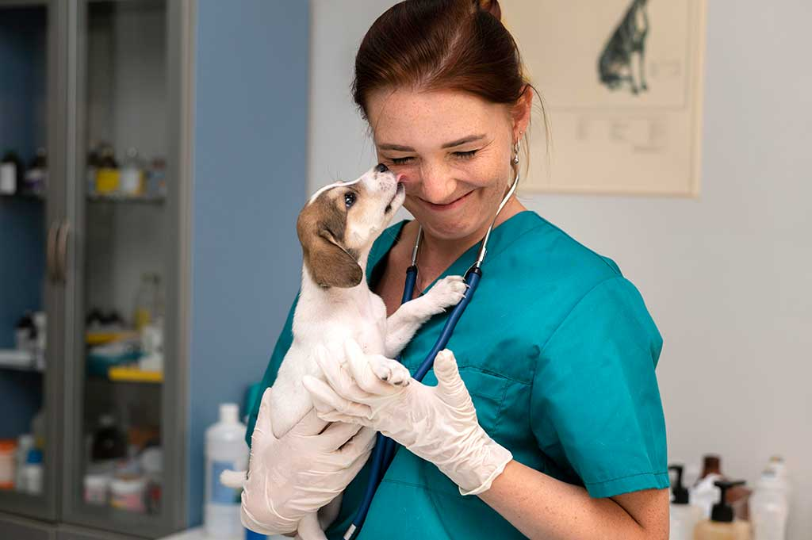

Bem-vindo à PetCare Clinic , o seu destino confiável para cuidados completos e compassivos para animais de estimação.

Nós entendemos o quanto seu animal de estimação é importante para você, e estamos aqui para oferecer os melhores serviços veterinários para garantir sua saúde e bem-estar.
Nossa equipe de médicos veterinários altamente qualificados e dedicados está pronta para atender às necessidades de saúde do seu pet, desde exames de rotina até tratamentos especializados.
Com anos de experiência e um amor genuíno pelos animais, você pode confiar na nossa expertise para cuidar do seu companheiro peludo.
Oferecemos uma ampla gama de serviços, incluindo consultas médicas, vacinações, cirurgias, cuidados dentários, exames laboratoriais e muito mais.
Nosso compromisso é proporcionar um ambiente acolhedor e seguro para você e seu pet, onde cada visita seja uma experiência positiva.
Explore nosso site para conhecer mais sobre nossos serviços, nossa equipe e as instalações da clínica. Entre em contato conosco para marcar uma consulta ou se tiver alguma dúvida. Estamos ansiosos para cuidar do seu animal de estimação e fazer parte da sua jornada de cuidados veterinários.